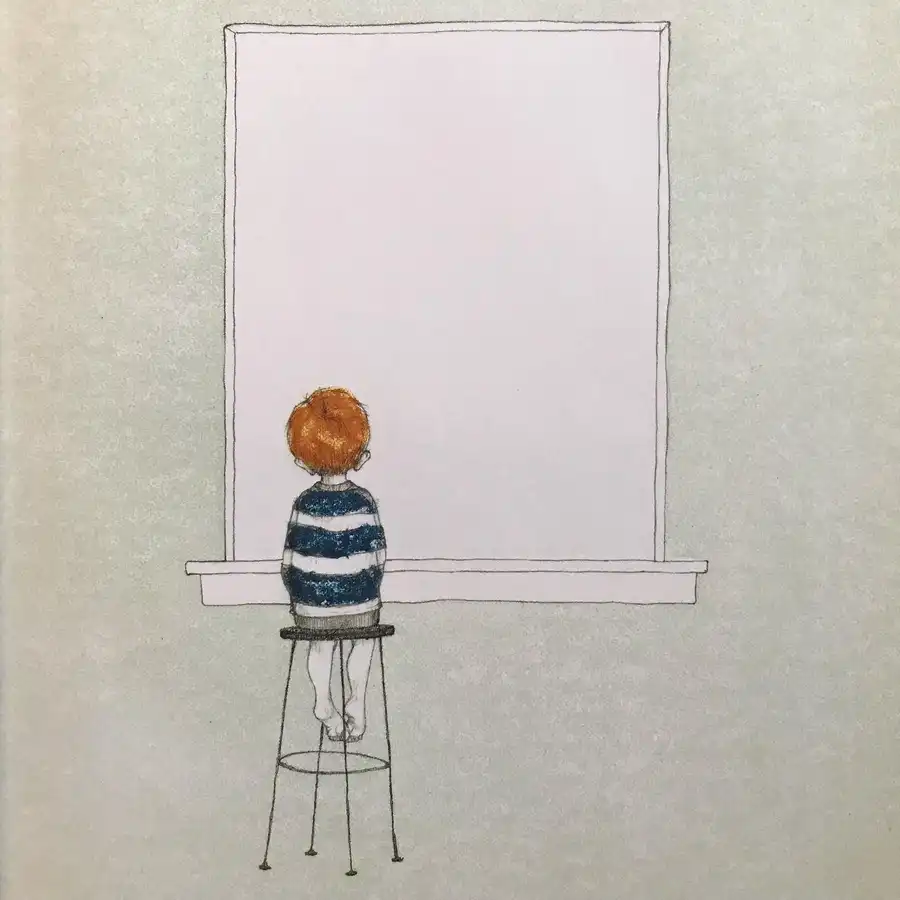
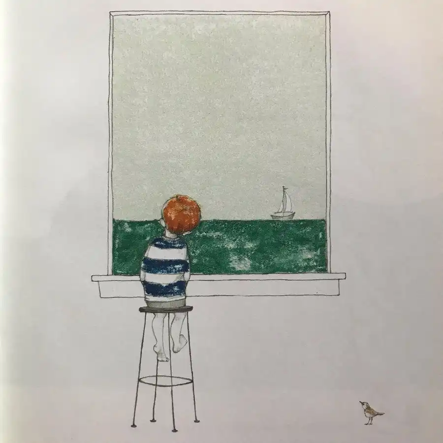
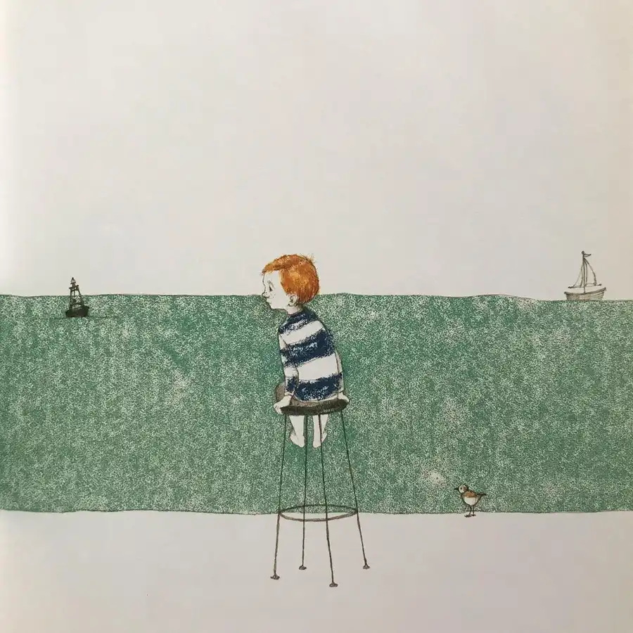
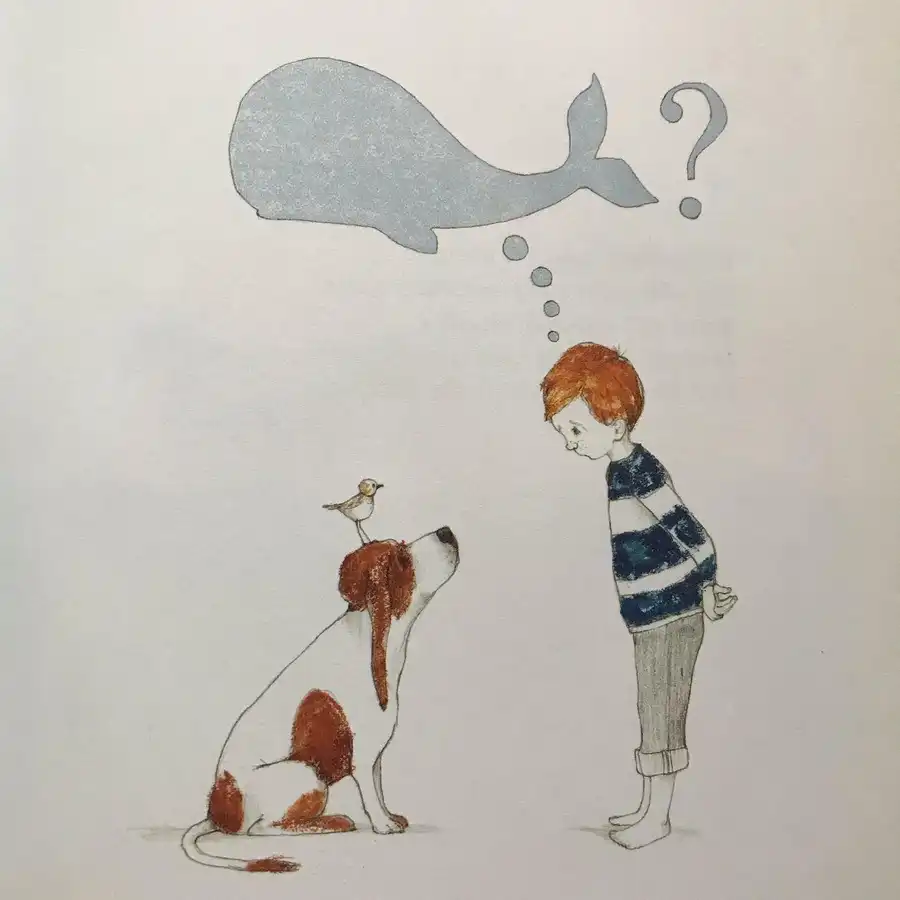
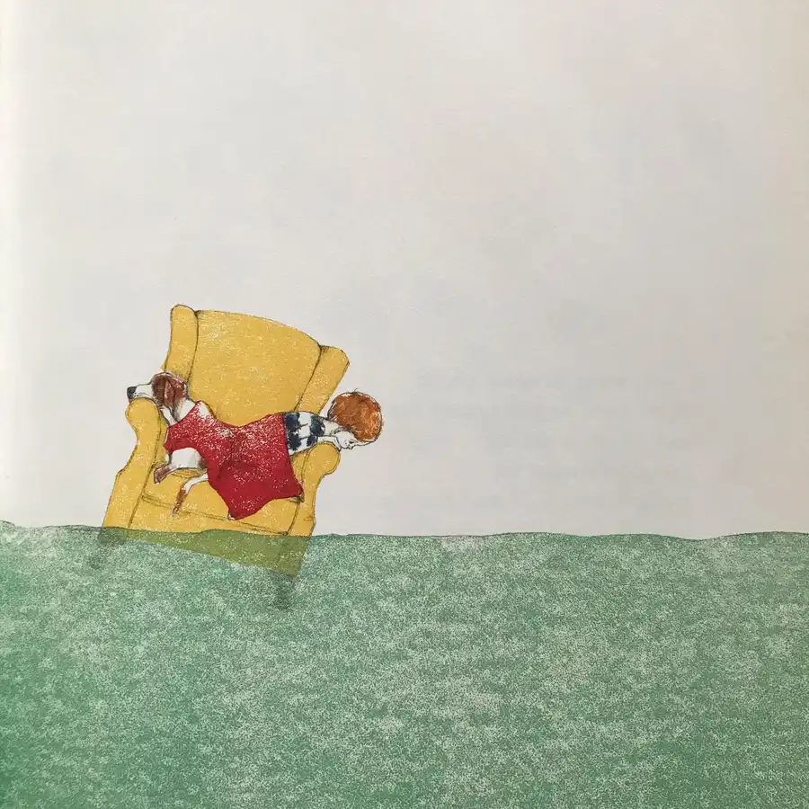
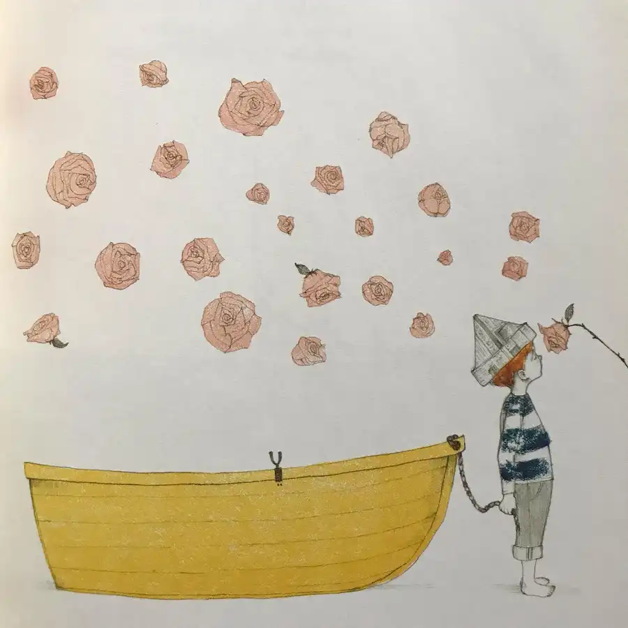
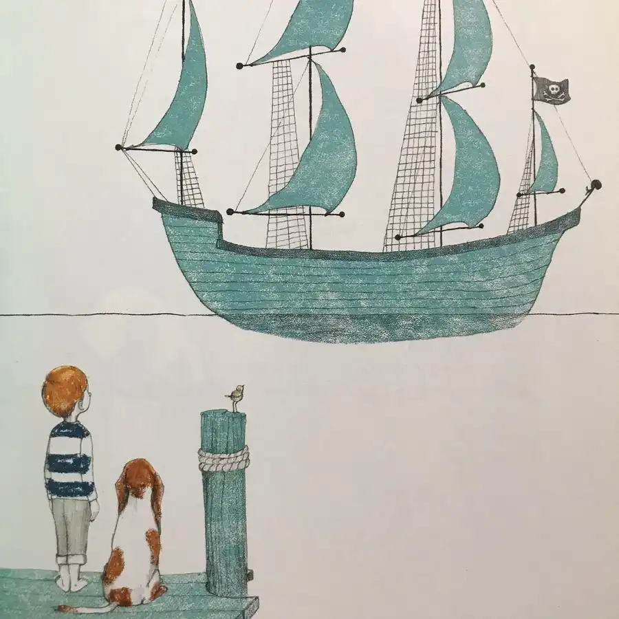
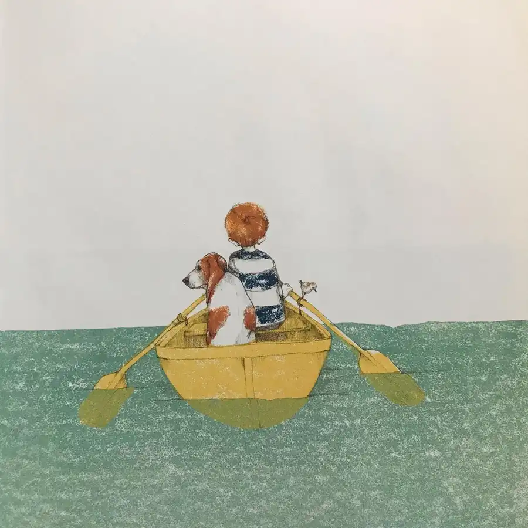
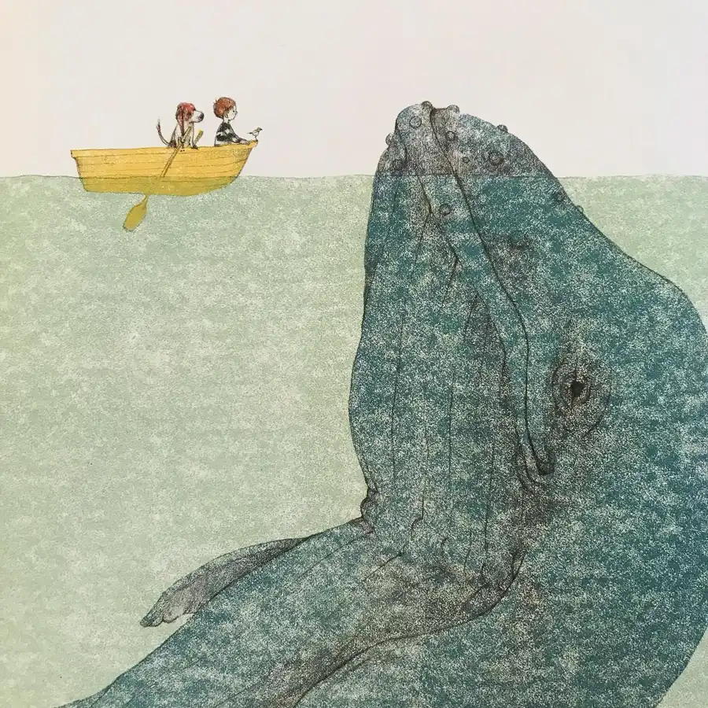

There’s a quiet comfort to the atmosphere of @juliefogliano and @erinestead’s If You Want to See a Whale. The book comprises a set of instructions for whale watching, replete with warnings to avoid distractions from various animals and objects nearby. Of course, these competing elements offer their own distinct tactile pleasures, and only after running through them all is the question of spotting a whale finally addressed. Fogliano’s delicate prose poetry shines with the effortless application of rhetorical devices such as repetition (“and time for waiting/and time for looking/and time for wondering”), alliteration (“sleeping eyes can’t watch for whales/and whales won’t wait for watching”), and chiasmus (“things that are smaller than most small things”). Stead’s art accentuates the pensive quality of the text with its soft, faded colors and freely drawn lines. #whale #window #ocean #sea #bird #roses #ship #pirates #cloud #clouds #book #books #childrensbooks #beautifulbooks #picturebook #picturebooks #childrensbookillustration #childrensliterature #illustration #kidlit #kidsbooks #bookworm #booklover #booklovers #bibliophile #bookstagram #bookstagrammer #bookstagrammers #instabook #instabooks









